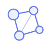
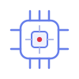
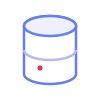
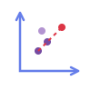
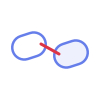
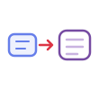
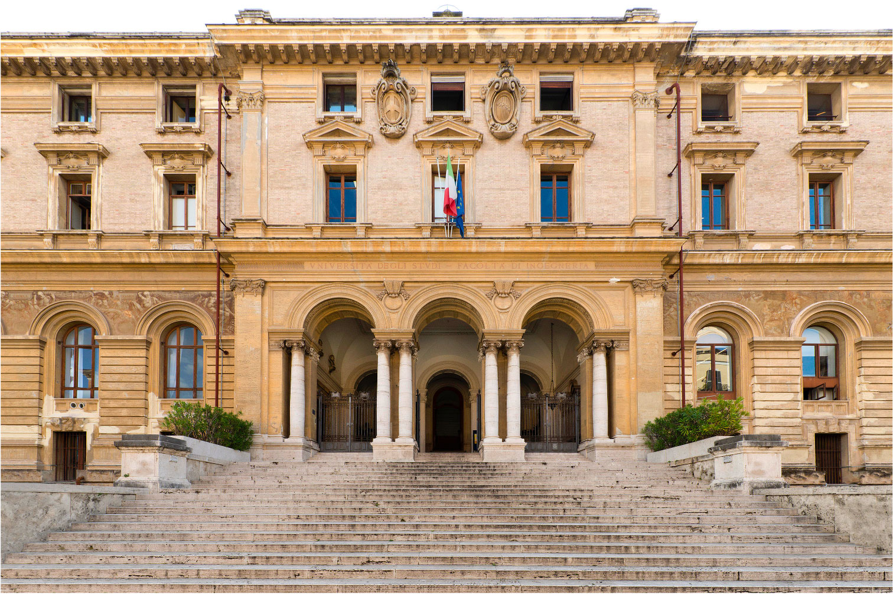
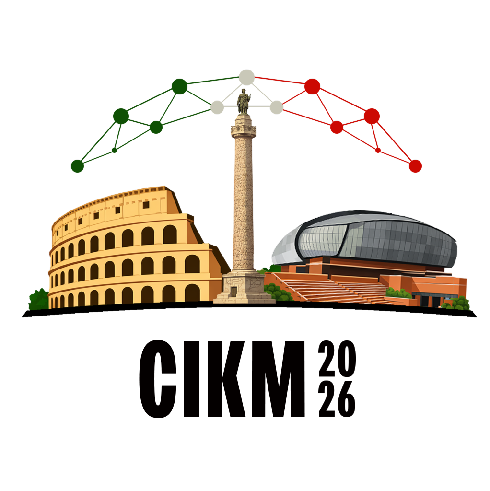

Sunday, November 8th, 2026 | Sapienza University of Rome | Rome, Italy
Modern information retrieval (IR) is built on pretrained language models whose parametric knowledge has driven strong gains in semantic understanding. Yet, this knowledge is frozen at training time, opaque, and shallow on long-tail, domain-specific, and fast-changing information, yielding imprecise, non-factual, or poorly grounded results. Knowledge-enhanced IR addresses this by augmenting retrieval systems—and the language models that power them—with external knowledge: unstructured or structured, gold or synthetic, increasingly across modalities. Large language models are now reshaping how this knowledge is acquired and integrated—for example, autonomous agents that plan, reason, and decide what to search; automated knowledge curation and linking; and systems that interleave retrieval and generation, learning when to consult external evidence and when to answer from parametric knowledge.
The Third Workshop on Knowledge-Enhanced Information Retrieval (KEIR @ CIKM 2026) gathers researchers and practitioners from IR, natural language processing, data mining, and knowledge management to advance the principled integration of external knowledge into IR. KEIR welcomes both methodological and applied contributions, with particular attention to knowledge-intensive, domain-sensitive fields such as science, medicine, law, and finance, where factuality, trust, and discovery are paramount.
KEIR is a half-day, in-person workshop co-located with the 35th ACM International Conference on Information and Knowledge Management (CIKM 2026). Registration is required through the official CIKM 2026 conference website. The workshop takes place at Sapienza University of Rome. Please note that, following the CIKM 2026 policy, the conference and its workshops are fully in person: hybrid presentation or attendance options cannot be accommodated.
Register on the CIKM 2026 Website

San Pietro in Vincoli Campus, Faculty of Engineering, Sapienza University of Rome
Via Eudossiana 18, 00184 Roma ·
Open in Google Maps

35th ACM International Conference on
Information and Knowledge Management
Academic Keynote
Industry Keynote
University of Bologna
University of Bologna
University of Bologna
Huazhong University of Science and Technology
University of Glasgow
IT:U Austria & IBM Research
Academic keynote
Industry keynote
Contributed works, presented in person
Speakers and attendees collaboratively identify open problems and shape a shared research agenda